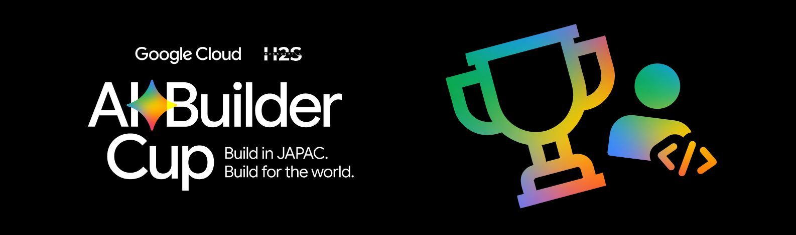
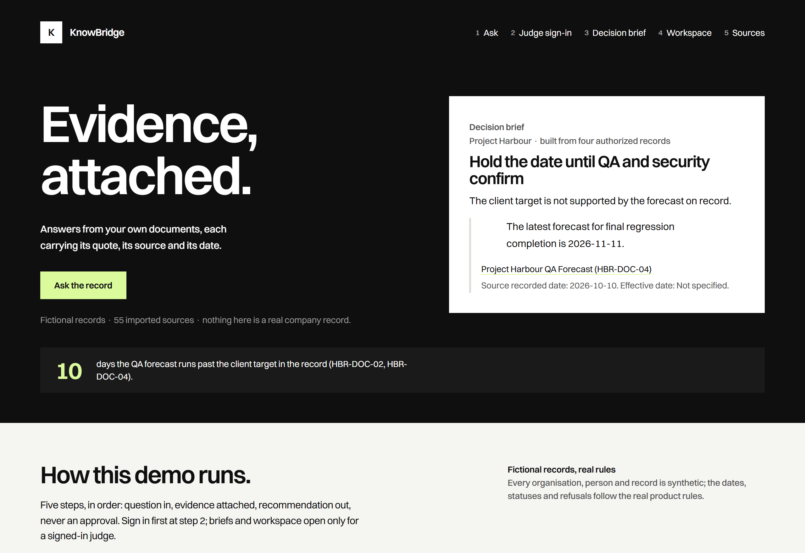
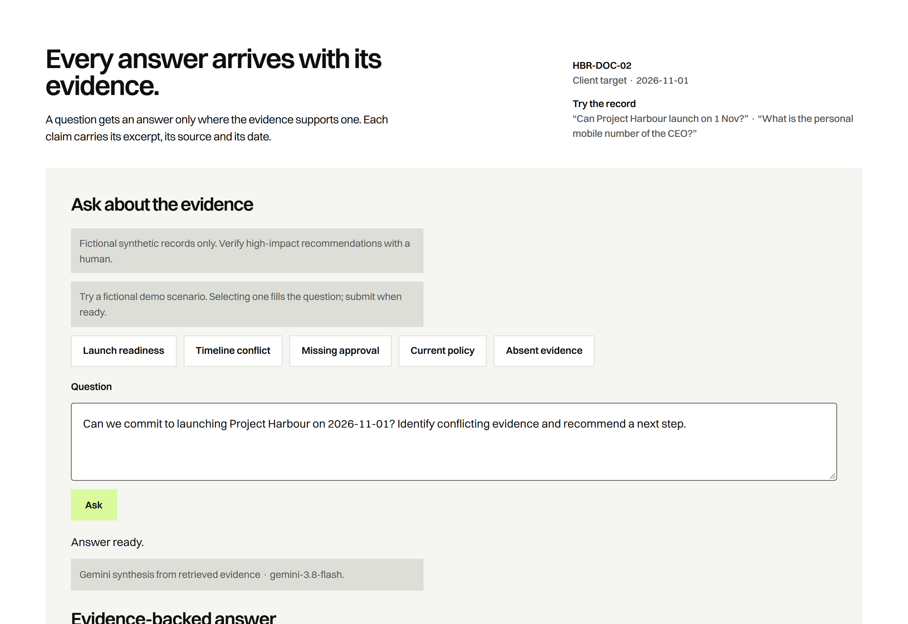
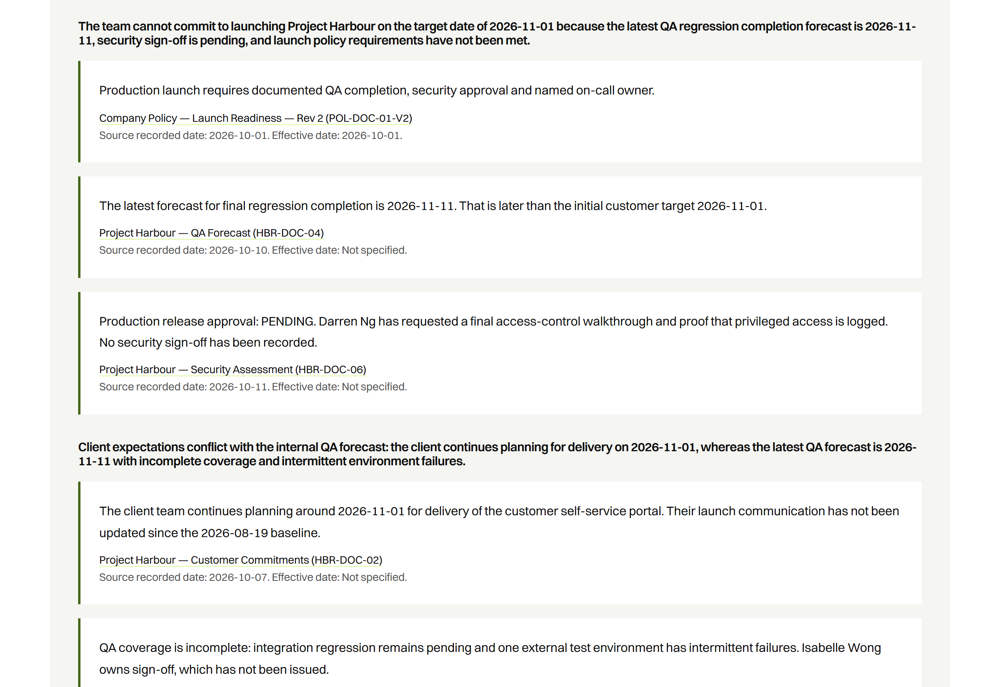
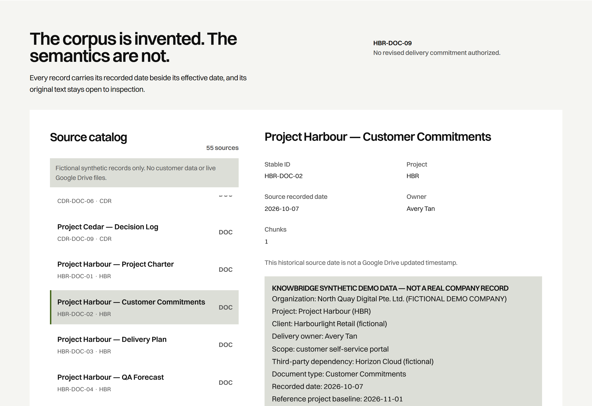
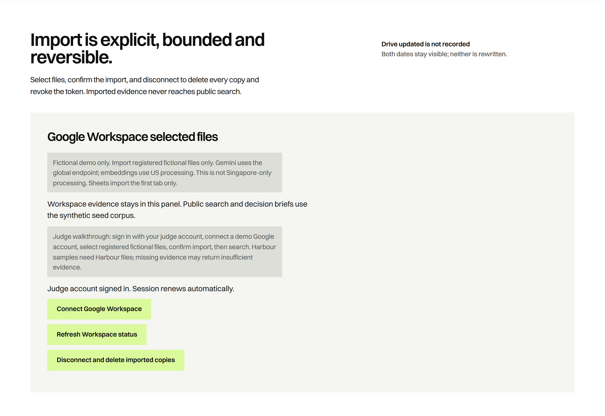
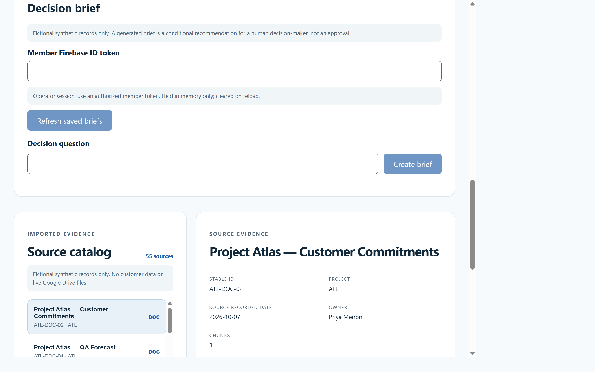
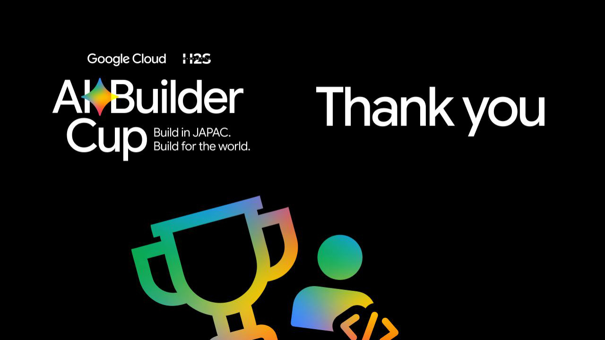

KnowBridge · Connecting knowledge to confident decisions | Google AI Builder Cup 2026 · Future of Work & Enterprise Productivity
a. Team name: KARAKA
b. Team leader name: Alfian Hidayatulløh
c. Problem Statement: Google Workspace SMEs hold project commitments across scattered Docs and Sheets — customer targets in one file, QA forecasts in another, security sign-off in a third. Nothing reconciles baseline vs forecast vs commitment vs approved decision, so teams risk promising dates the evidence does not support.
All organizations, people and records in this deck are fictional synthetic data. Results are reported as measured.
An evidence catalog that answers with sources, dates and honest gaps
KnowBridge is a grounded search and decision-support tool for Google Workspace SMEs. It imports a bounded set of files, keeps the original text and record dates attached to every piece of evidence, and answers questions with literal, click-through citations — reconciling conflicting documents instead of hiding them.
Connect → Investigate → Reconcile → Decide — inside the tools teams already use, with every answer traceable to source text.
A structured Decision Brief: options, risks, unknowns and conditional recommendations — for a human to verify. Never an autonomous decision.
When evidence is absent, the answer is "insufficient evidence". Fabricated excerpts are rejected server-side; a later forecast never silently erases an earlier commitment.
Deployed on Google Cloud with a deterministic synthetic corpus and a 12-case live benchmark. Failures are reported as measured, including service errors.
Why KnowBridge is different — and how it solves the problem
Market framing is stated as a testable hypothesis (Southeast Asian services SMEs on Google Workspace) — not a validated market claim.
Why not just ask ChatGPT, Claude or Gemini?
Different job, not a better chatbot: what a team may commit to, from its own records — with verification a chat answer does not enforce.
| General AI assistants | KnowBridge | |
|---|---|---|
| Evidence | Web pages and uploaded files, summarized | Only authorized Docs / Sheets; stable source IDs, owners and recorded dates kept |
| Citations | Helpful links and quotes, not checked against the source | Every quoted excerpt must literally exist in the stored original; fabricated citations fail the answer closed |
| Conflicting dates | The newest statement usually wins the summary | Baseline / forecast / commitment / approved decision typed; effective date stays distinct from the Drive updated timestamp |
| Missing evidence | Usually still answers | Answers "insufficient evidence" — abstention is product behavior |
| Access | Depends on chat and connector permissions | Retrieval restricted to the requesting tenant / user before any context reaches the model |
| Output | Chat transcript | Saved Decision Brief with a deliberate human review acknowledgement |
General assistants are better at broad knowledge, open-web research, writing and code. KnowBridge runs Gemini on Vertex AI — the differentiator is the enforced grounding and decision semantics around the model, not the model itself. Design comparison of typical general-assistant behavior (2026), not a measured head-to-head benchmark.
What KnowBridge offers
Use-case flow: connect → investigate → reconcile → decide
Member selects registered files via Google Picker (OAuth). Only authorized, tenant-pinned sources are imported and indexed.
Ask a question. Tenant-scoped retrieval + grounded answer with literal excerpts and source links. Absent evidence → abstain.
Temporal & conflict analysis across sources: what is baseline, forecast, commitment, approved decision — and since when.
Generate a Decision Brief (options, risks, unknowns) for human review. Saved for review; never auto-approved.
Interface structure — wireframe
Wireframes are structural sketches; the following slides show the actual deployed prototype.
Google Cloud architecture — fail-closed grounding
Docs / Sheets (fictional). Google Picker + OAuth for selected-file import. Document effective dates travel with the content.
Next.js / Node 22 API. Non-root container, Secret Manager, CSP. Grounding gates; revocation-checked Firebase ID tokens on mutations; fail-closed 502/503.
gemini-3.8-flash (global endpoint) for answers & briefs; gemini-embedding-001 768-d vectors (us-central1); Firestore vector retrieval, tenant-scoped.
Tenant-scoped retrieval → model call → literal citation verification → decision-coverage check → semantic review → ship or fail closed.
Non-root container · Secret Manager secrets · revocation-checked tokens on writes · CSP · synthetic-tenant pinning · cross-tenant chunks never reach the LLM.
Honest disclosure: model processing is not Singapore-only (Gemini global endpoint; embeddings US). Real-data import is prohibited.
Stack
Next.js 15 · React 19TypeScriptNode 22Zod validation
Single deployable web app + API routes; strict schema validation at the boundaries.
Gemini (gemini-3.8-flash)gemini-embedding-001Firestore vector search
Grounded generation with literal-citation verification; 768-d embeddings for retrieval.
Cloud Run (asia-southeast1)Secret ManagerDockerGoogle Picker + OAuthFirebase Auth (ID tokens)
Service identity over hard-coded keys; revocation-checked tokens on mutations.
VitestPlaywrightaxe-core accessibilityPython seed generator
279 unit & integration tests across 38 files, e2e flows, 11 live adversarial semantic regressions (incl. prompt injection), deterministic synthetic dataset.
Running cost — rough order-of-magnitude estimates
| Component | Basis | Estimated monthly cost (hackathon / demo scale) |
|---|---|---|
| Cloud Run (asia-southeast1) | 1 vCPU · scale-to-zero · demo + evaluation traffic | ≈ S$5 – 15 |
| Gemini API (flash + embeddings) | Usage-based; demo queries + 12-case benchmark runs are the main driver | ≈ S$10 – 25 |
| Firestore (vector retrieval) | Small synthetic corpus (168 docs / 24 sheets); mostly free tier | ≈ S$0 – 5 |
| Secret Manager · Artifact Registry | Secret versions + container images | ≈ S$1 – 3 |
| Frontend hosting | Served from the same Cloud Run service | ≈ S$0 |
| Total | ≈ S$20 – 50 / month |
Rough estimates only — all components are usage-based and actual cost scales with query volume. Development uses free-tier / trial credits where available. No commitment or quote is implied.
Deployed prototype — landing & Ask panel


Deployed prototype — grounded answer & source catalog


Deployed prototype — Workspace import & decision brief


Captured 18 October 2026 from the deployed Cloud Run release. All records shown are fictional synthetic data. See it run end-to-end in the product demo video (3:30).
Measured results — including failures
168 / 24 / 1,904
fictional Docs / Sheets / rows · 8 projects · 12 gold cases — seed verifier PASS
279 / 279
unit & integration tests (38 files) PASS · lint, typecheck, build PASS · 11/11 live adversarial semantic regressions (incl. prompt injection) PASS · verified 18 Oct
2 / 12
both latest recorded complete deployed benchmark runs (before/after the reliability fix): every failure was a provider-side service error (HTTP 503), never an evidence-quality failure; every pass had fully valid literal citations
9 / 10 / 11 of 12
earlier complete runs (revision knowbridge-00009-7j5; 11/12 local CLI). Totals are never aggregated across runs
Median latency of the pre-fix deployed run including failures: 49,509.5 ms. Full-suite reliability under intermittent provider-side model failures remains an open issue and is reported as such. Artifacts: deployed-evaluation-prefix / deployed-evaluation-postfix (2026-10-17).
What's next — and what we will not claim
KnowBridge — Know what your sources actually say.
GitHub public repository · demo video (3 minutes) · final product
Repository includes the reproducible synthetic dataset (Python seed generator + verifier), architecture notes, evaluation artifacts and run instructions.
All demo companies, people, emails and records are fictional. Theme: Future of Work & Enterprise Productivity. Team KARAKA · AI Builder Cup 2026.
